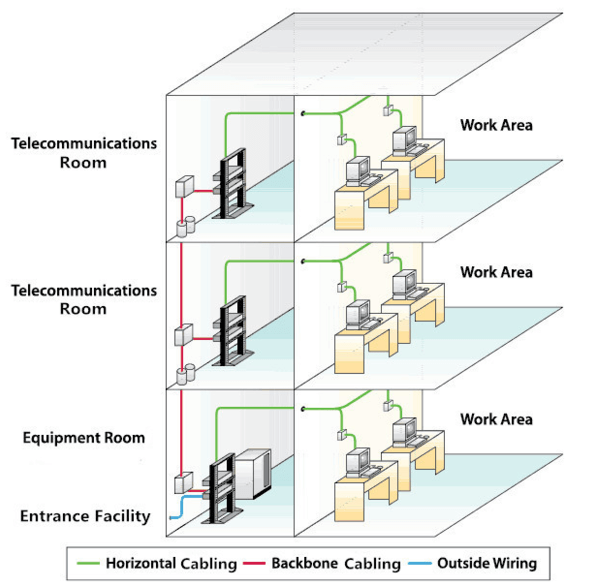
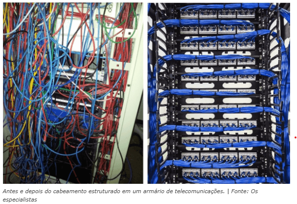

◉ Cabeamento estruturado: o que é, subsistemas e benefícios
No cenário tecnológico em constante evolução, a infraestrutura de rede desempenha um papel crucial
na comunicação e conectividade eficientes dentro das organizações.
Nesse contexto, temos o os sistemas de cabeamento estruturado, uma estrutura fundamental e conhecida
por sua função primordial na criação de uma rede confiável e escalável.
Por isso, hoje vamos falar, em mais detalhes, tudo o que tange o assunto sobre cabeamento estruturado,
sua importância, estrutura e vantagens.
➤ O que é o cabeamento estruturado?
O cabeamento estruturado é uma padronização das instalações de rede, garantindo a prevenção e
segurança contra possíveis problemas técnicos e possibilitando uma estrutura que dure muitos anos.
Isso porque esse método considera as normas de segurança nacionais e internacionais, além de
proporcionar um melhor aproveitamento do espaço e equipamentos.
Em suma, o cabeamento estruturado é uma rede capaz de fazer transmissões por diversos caminhos
diferentes em uma mesma estrutura, sem que a estrutura fique a vista ou desorganizada.
➤ Como funciona um sistema de cabeamento estruturado?
O sistema de cabeamento estruturado reúne diferentes cabos, dispositivos e conectores de dados,
comunicação, entre outros, tudo em uma só estrutura padronizada.
Flexível e seguro, funciona como um ponto de entrada onde os cabos de fibra óptica e outros serviços
são conectados a infraestrutura interna, com cabeamento horizontal ou vertical para levá-los a
pontos e tomadas para se conectar a outros dispositivos, como computadores, smartphones e outros
equipamentos eletrônicos.
➤ Benefícios do cabeamento estruturado
Anteriormente, já foi possível perceber alguns dos benefícios do cabeamento estruturado, já que
falamos em segurança e durabilidade. Mas, falando nas principais vantagens desse investimento,
seriam elas:
• Infraestrutura com durabilidade de, no mínimo, uma década;
• Alta capacidade para suportar servidores de rede local, switches e roteadores;
• Organização do cabeamento em grandes estruturas, principalmente corporativas;
• Infraestrutura preparada para receber novas tecnologias que venham a surgir;
• Segurança contra problemas técnicos que possam comprometer processos;
• Transmissão e disposição padronizados;
• Segurança e qualidade em padrões internacionais;
• Projeto e instalação padronizados e sistematizados;
• Controle e administração práticos e fáceis do sistema de cabeamento.
➤ Quais riscos de não ter uma estrutura planejada para cabos?
A ausência um sistema de cabeamento estruturado pode causar uma série de consequências, incluindo:
• problemas de conexão e diminuição da produtividade: a rede lenta é uma das principais
consequências de um cabeamento inadequado, ocasionando quedas de conexão e perdas que
reduzem o desempenho do negócio;
• aumento das despesas operacionais: a falta de um bom sistema de cabeamento instalado repercute
em gastos com manutenções e muitos reparos na rede;
• concorrência competitiva: empresas estão investindo nesse tipo de infraestrutura como um diferencial
competitivo;
• problemas de segurança: sistemas inadequados abrem portas para hackers e invasões a dados sigilosos;
limitação às necessidades futuras do negócio: chega um momento em que o cabeamento ineficaz limita
o crescimento e a expansão do negócio.
➤ Subsistemas do cabeamento estruturado
Segundo a NBR-14565 (CABEAMENTO ESTRUTURADO PARA EDIFÍCIOS COMERCIAIS E DATA CENTERS), existem
sete subsistemas de um sistema de cabeamento estruturado. São eles:
➤ Entrada do prédio e sala de entrada de telecomunicações (SET)
A entrada do prédio abriga a interface entre cabeamento externo (cabo de interligação) e a sala
de entrada de telecomunicações (SET) — backbone — que ficam no interior do local.
Segundo a NBR-14565, são dois subsistemas – cabeamento externo e sala de entrada de telecomunicações.
Nesse subsistema, as Normas que garantem a qualidade e segurança das instalações são a EIA/TIA-569
e a NBR-14565.
➤ Sala de equipamentos (SEQ)
Local que aloca os recursos que mantém toda a rede ativa, como servidores, equipamentos
de rede e outros. Além disso, quem determina as necessidades dos componentes da sala
de equipamentos também são as Normas EIA/TIA-569 e a NBR-14565.
➤ Backbone (Rede Primária)
O cabeamento do backbone/rede primária, é como a ligação vertical entre os andares do prédio e pelo
cabeamento entre as seguintes áreas: o armário de telecomunicação (A), a sala de equipamentos (SEQ)
e a entrada do prédio/sala de entrada de telecomunicações (SET).

➤ Armário de telecomunicações (AT)
Local onde ficam as conexões dos cabos, que saem para as áreas de trabalho, como computadores,
telefones e outros. Além disso, as especificações do armário de telecomunicações (AT) também
é feita pelas Normas EIA/TIA-569 e NBR-14565.

➤ Cabeamento horizontal (Rede Secundária)
O cabeamento horizontal/rede secundária, é a estrutura de cabos que liga a área de trabalho com o
armário de telecomunicações. Em outras palavras, faz a distribuição final das transmissões.
➤ Área de trabalho
Por fim, a área de trabalho é onde ficam as estações com computadores, telefones, terminais de dados,
adaptadores, entre outros. Então, a relação final da estrutura é essa:
Cabo de Interligação Externo (NBR-14565) / Outside Wiring (EIA/TIA-569)
Sala de Entrada de Telecomunicações (SET) (NBR-14565) / Entrance Facility (EIA/TIA-569)
Sala de Equipamentos (SEQ) (NBR-14565) / Equipment Room (EIA/TIA-569)
Rede Primária (NBR-14565) / Backbone Cabling (EIA/TIA 569)
Armário de Telecomunicações (AT) (NBR-14565) /Telecommunications Room (EIA/TIA-569)
Rede Secundária (NBR-14565) / Horizontal Cabling (EIA/TIA-569)
Área de Trabalho (NBR-14565) / Work Area (EIA/TIA-569)
➤ Quais as principais normas para esses sistemas?
Abaixo, colocamos um pequeno resumo sobre as principais normas técnicas e diretrizes para instalações
de cabeamento estruturado. Veja:
NBR 16869-2:2021: especifica os métodos e equipamentos para medir a atenuação do cabeamento de fibra
óptica monomodo e multimodo instalado;
NBR nº 14565: determina os requisitos para infraestrutura, cabos e conectores para sistemas de
cabeamento estruturado em fibra óptica;
NBR nº 16415: traz os requisitos para cabeamento estruturado com as especificações de tipos,
componentes, distâncias e testes;
ABNT-NBR-16665/2015: norma brasileira que especifica os requisitos para sistemas de cabeamento
estruturado em fibra óptica, incluindo os requisitos para cabos, conectores, terminações e
infraestrutura em edifícios comerciais e data center;
ABNT-NBR-16264/2016: norma brasileira que especifica os requisitos para sistemas de cabeamento
estruturado residencial;
ABNT-NBR-16421/2016: norma brasileira que especifica os requisitos para sistema que pode ser usado
em instalações industriais ou áreas dentro de outros tipos de edifícios;
ANSI/TIA568-C e D: normas para cabeamento de telecomunicações em edifícios comerciais, com requisitos
gerais para cabeamento, componentes em cabos de par trançado, cabeamento óptico e cabos coaxiais de
banda larga;
EIA/TIA-569-D: norma americana com requisitos para edifícios comerciais, especificando a área ocupada
pelos elementos do cabeamento estruturado;
ANSI/TIA-570-A: norma americana que especifica os requisitos de gerenciamento para prédios
residenciais ou casas;
ANSI/TIA 606-C: norma americana que cita os requisitos para documentação e identificação ou
etiquetagem dos componentes;
TIA 1005: norma americana que especifica os requisitos para cabeamento de fibra óptica em áreas
classificadas;
ANSI/TIA-942-B: norma americana que especifica os requisitos para sistemas de cabeamento estruturado
e áreas de infraestrutura de Data Centers;
RoHS: Restrição de Substâncias Perigosas, um regulamento que veta a utilização de substâncias
perigosas em produtos eletrônicos;
ISO/IEC 11801: equivale à TIA/EIA-568-C;
IEC 60331-1: especifica o método de teste para cabos que são necessários para manter a integridade
do circuito quando sujeitos a incêndio e choque mecânico;
ABNT NBR-NM-IEC 60332-1: descreve um ensaio para avaliar a resistência ao fogo de um único condutor
ou cabo isolado.
Esses são alguns exemplos, mas tenha em mente que podem existir outras normas e elas estão em
constante evolução e adaptação ao longo dos anos.